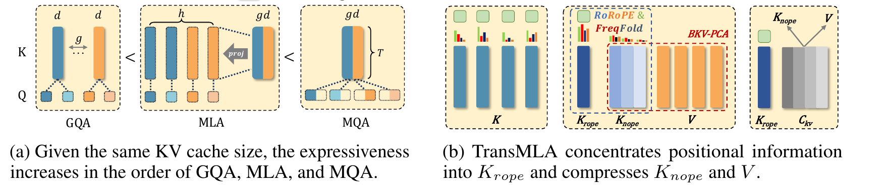

Abstract§
Modern large-language models often face communication bottlenecks on current hardware rather than computational limitations. Multi-head latent attention (MLA) addresses this by compressing the key-value cache using low-rank matrices, while the Absorb operation prevents the KV cache from reverting to its original size, significantly boosting both training and inference speed. Despite the success of DeepSeek V2/V3/R1, most model providers have heavily invested in optimizing GQA-based models and, therefore, lack strong incentives to retrain MLA-based models from scratch. This paper demonstrates that MLA provides superior expressive power compared to GQA with the same KV cache overhead, thereby offering a rationale for transitioning from GQA to MLA. In addition, we introduce TransMLA, a framework that seamlessly converts any GQA-based pre-trained model (e.g., LLaMA, Qwen, Gemma, Mistral/Mixtral) into an MLA-based model. For the first time, our method enables direct conversion of these models into a format compatible with DeepSeek's codebase, allowing them to fully leverage DeepSeek-specific optimizations such as vLLM and SGLang. By compressing 93% of the KV cache in LLaMA-2-7B, we achieve a 10.6x speedup with an 8K context length while maintaining meaningful output. Moreover, the model requires only 6B tokens for fine-tuning to recover comparable performance across multiple benchmarks. TransMLA provides a practical path for migrating GQA-based models to the MLA structure, and when combined with DeepSeek's advanced optimizations—such as FP8 quantization and Multi-Token Prediction—further inference acceleration can be achieved.
1 Introduction§
Large language models generate tokens autoregressively and attend over all preceding tokens at every step. Implementations cache the intermediate key–value (KV) pairs to avoid recomputation, but as models and contexts grow, this cache becomes a primary inference bottleneck: it grows linearly with sequence length, consumes scarce device memory, and limits batch size and concurrency. The limiting resource is often communication and capacity rather than raw compute.
Grouped-Query Attention (GQA) reduces the cache by letting a group of query heads share one key/value head. With one group it degenerates to Multi-Query Attention (MQA); with as many groups as heads it becomes standard Multi-Head Attention (MHA). Both GQA and MQA trade model quality for memory. Post-training compression methods—token pruning, quantization, cross-layer KV sharing—can shrink the cache further, but they usually require custom kernels or non-standard runtime support, which hinders adoption.
Multi-Head Latent Attention (MLA), introduced with DeepSeek V2 and refined in V3 and R1, compresses the KV cache into a low-rank latent vector. During training it retains an MHA-like parallel form; during inference the Absorb operation switches it into an MQA-like form, so the cache never has to be materialized at full size. MLA models achieve state-of-the-art quality at low training and inference cost, and DeepSeek's open implementations make the optimization accessible.
This paper first proves that, under the same KV cache budget, MLA is strictly more expressive than GQA. The practical obstacle to switching is sunk investment: most providers have already trained and optimized GQA models and will not retrain from scratch. The paper therefore asks whether a pretrained GQA model such as LLaMA or Qwen can be converted into MLA while inheriting its weights and pretraining work.
The key obstacle is RoPE. In GQA every query–key head carries its own rotary position embedding, which blocks DeepSeek's Absorb operation: the key up-projection cannot be folded into the query projection while each head holds a separate rotation. Borrowing DeepSeek's decoupled-RoPE scheme, TransMLA concentrates positional signals into a small subset of key dimensions, \(K_{rope}\). The remaining dimensions, \(K_{nope}\), carry little positional information; their RoPE is dropped and they are merged with V for low-rank decomposition. Once RoPE is isolated, the RoPE-free key up-projection can be absorbed into the query projection exactly as in DeepSeek.
To concentrate positional information efficiently, the paper introduces RoRoPE. It performs PCA on key outputs, applies a rotation to the real and imaginary components of RoPE, and consolidates the principal components of all attention heads into the dimensions of the first head. The rotation is output-invariant as long as (1) it acts only on the same dimension across heads and (2) the real and imaginary components of RoPE are rotated in the same way. FreqFold then exploits the similarity of adjacent RoPE frequencies to improve concentration.
Finally, the \(\ell_2\) norm of \(K_{nope}\) is much larger than that of V. Running PCA on the concatenated matrix \([K_{nope};V]\) without adjustment lets the key dominate the principal components, causing severe loss of value-subspace information and a sharp accuracy drop. Balanced Key–Value (BKV) rescales \(K_{nope}\) and V so that their norms match before joint PCA; this simple normalization restores balance and markedly improves compression quality.
The resulting method, TransMLA, compresses the LLaMA-2 7B KV cache by 68.75% with only a 1.65-point average drop across six benchmarks in a training-free conversion. At the same compression on the same model, the concurrent MHA2MLA method falls from 59.85 to 37.90. At 93% compression the converted model still produces meaningful responses, and 6B tokens of training largely restore performance. Tested with vLLM on three hardware platforms, TransMLA achieves up to a 10.6x speedup over the original GQA model. Converted checkpoints are fully compatible with DeepSeek's code and inference ecosystem.
The contributions are:
- Theory. Under an equal KV-cache budget, MLA is more expressive than GQA; any GQA layer can be written as an MLA layer, but not vice versa.
- Method. Head merging, RoRoPE, FreqFold, and BKV joint low-rank approximation convert a GQA model to MLA with very small transformation loss.
- Systems. Converted models run directly on the DeepSeek inference stack and deliver measured speedups that grow with context length.


2 Related Work§
KV-cache compression research falls into three broad families: changing the attention structure, post-training pruning or cross-layer sharing of an existing cache, and converting a pretrained model to a more efficient attention form.
MQA, GQA, and MLA change the attention structure. MQA and GQA save memory but usually sacrifice accuracy. MLA uses low-rank latents plus decoupled RoPE to obtain near-state-of-the-art quality at lower training and inference cost. GLA offers a more parallel-friendly latent-attention implementation, and TPA factorizes activations dynamically to cut the runtime cache by an order of magnitude—but TPA requires training from scratch. TransMLA is not another attention variant: it converts an existing GQA model into MLA with light fine-tuning, inheriting MLA's memory and speed advantages.
Post-training methods operate on a pretrained model. LazyLLM, A2SF, and SnapKV prune less important tokens; YONO, MiniCache, and MLKV share KV representations across layers. These approaches can be effective, but they typically require custom kernels or runtime changes, complicating deployment. TransMLA instead loads converted checkpoints directly into the mature DeepSeek ecosystem and obtains MLA-level speedups on every supported platform.
Two works are closest. Palu applies low-rank decomposition to both keys and values, but does not specifically handle RoPE, so it cannot use Absorb at inference and must project the compressed representation back to its original size; that projection adds substantial runtime overhead and limits acceleration. MHA2MLA is a concurrent conversion method that also decouples RoPE from the main path. TransMLA is not merely a GQA extension of MHA2MLA—both support MHA and GQA architectures. MHA2MLA selects RoPE dimensions to remove solely from query/key norms, which tends to lose more information at the same removal ratio; the important dimensions are unevenly distributed, requiring sparse indexing that complicates optimization and acceleration. MHA2MLA does not demonstrate actual inference speedup, and it applies joint SVD directly to K and V, incurring higher loss than the balanced key–value PCA used here.
3 Preliminaries§
Notation: \(\mathbf{x}_t\in\mathbb{R}^{D}\) is the input at position \(t\); \(D\) is the hidden size, \(h\) the number of query heads, \(d=D/h\) the head dimension, and \(g\) the number of KV groups in GQA.
3.1 Rotary Position Embedding (RoPE)§
RoPE encodes absolute position with rotations at different frequencies and makes attention depend explicitly on relative position. It treats adjacent dimension pairs as the real and imaginary parts of a complex number and rotates each pair by an angle proportional to the token position:
for \(k=1,\dots,d/2\). Equivalently,
where \(\mathbf{c}_t\) and \(\mathbf{s}_t\) collect the per-frequency cosines and sines, and \(\mathbf{x}_t^{\perp}\) maps each pair \((x_{2k-1},x_{2k})\) to \((-x_{2k},x_{2k-1})\). Because the rotation depends only on position, the query–key inner product between positions \(t\) and \(j\) depends only on \(t-j\), giving RoPE its relative-position property.
3.2 Grouped-Query Attention (GQA)§
GQA uses projections \(\mathbf{W}^{Q}\in\mathbb{R}^{hd\times D}\), \(\mathbf{W}^{K},\mathbf{W}^{V}\in\mathbb{R}^{gd\times D}\), and \(\mathbf{W}^{O}\in\mathbb{R}^{D\times hd}\), then slices the results into heads or groups:
Query head \(i\) (\(i=1,\dots,h\)) attends to group \(\lceil i/(h/g)\rceil\). After applying RoPE, the output for head \(i\) at position \(t\) is
With \(g=h\), GQA becomes MHA; with \(g=1\), it becomes MQA. GQA caches \(2gd\) elements per token per layer, the reference budget used throughout the paper.
3.3 Multi-Head Latent Attention (MLA)§
MLA compresses keys and values into a low-rank latent vector before caching. It computes
with \(\mathbf{W}^{DKV}\in\mathbb{R}^{r_{kv}\times D}\), and then up-projects with \(\mathbf{W}^{UK},\mathbf{W}^{UV}\in\mathbb{R}^{hd\times r_{kv}}\). On the query side, \(\mathbf{W}^{DQ}\in\mathbb{R}^{r_q\times D}\) produces \(\mathbf{c}_t^{Q}\) and \(\mathbf{W}^{UQ}\in\mathbb{R}^{hd\times r_q}\) produces the per-head queries, reducing activation memory during training.
Position is carried by a decoupled RoPE: additional multi-head queries \(\mathbf{q}_{t,i}^{R}\in\mathbb{R}^{d_R}\) and a shared key \(\mathbf{k}_t^{R}\in\mathbb{R}^{d_R}\) are generated by \(\mathbf{W}^{QR}\) and \(\mathbf{W}^{KR}\) and rotated:
MLA supports two computational paradigms with the same parameters. Training resembles standard MHA:
Inference switches to an MQA-like Absorb form. The key up-projection is folded into the query, and only the latent vector and the RoPE key are cached:
In this form, \(\mathbf{c}_t^{KV}\) acts as one large KV head shared by all query heads, and the cache never has to be expanded to full key/value size. Any change that breaks absorbability—such as keeping a separate RoPE in every head—forces MLA back onto the expensive path.
4 TransMLA§
TransMLA rests on two observations.
First, under a fixed KV-cache budget, MLA is strictly more expressive than GQA. Any GQA layer can be rewritten as an MLA layer by introducing one additional projection matrix; the reverse is not always possible, so MLA subsumes GQA. With RoPE present, the MLA equivalent must be expressed in absorbed form.
Second, inference accelerates only if MLA actually uses a smaller cache. Constructing an MLA-equivalent representation of a GQA model is not enough; the number of stored KV vectors must genuinely decrease. TransMLA therefore converts a GQA network into a DeepSeek-like MLA architecture that runs directly on DeepSeek's optimized inference stack.
Expressiveness argument. Fix the KV-cache budget at \(2gd\) per token per layer and the number of query heads at \(h\). The paper compares GQA, a factorized MLA core (denoted \(\mathrm{MLA}_{\mathrm{factorized}}\)), and MQA, and proves
For \(\mathrm{GQA}\le\mathrm{MLA}_{\mathrm{factorized}}\), set
and initialize each head's \(\mathbf{W}_i^{UK},\mathbf{W}_i^{UV}\in\mathbb{R}^{d\times 2gd}\) as block selectors: an identity block for the head's group and zeros elsewhere. MLA then reproduces GQA's key/value generation exactly with a \(2gd\)-dimensional latent \(\mathbf{c}_j^{KV}\) and the same cache size.
For \(\mathrm{MLA}_{\mathrm{factorized}}\le\mathrm{MQA}\), fold the up-projection into the query:
Each head now uses a widened \(2gd\)-dimensional query against one shared key/value, which is exactly MQA. Since \(2gd>d\), MQA permits a higher interaction rank than the per-head effective rank of factorized MLA.
Both inequalities are strict. When GQA is written as MLA, the up-projections must be sparse block selectors, whereas a general MLA learns dense up-projections that combine features from the shared latent into \(h\) distinct key/value vectors instead of replicating \(g\) groups \(h/g\) times. For scoring, MLA's per-head bilinear matrix
has rank at most \(d\), while the folded MQA form permits rank up to \(2gd\). Full MLA combines an \(\mathrm{MLA}_{\mathrm{factorized}}\) core for content with an MQA-structured shared key for position, and is therefore more expressive than GQA. This is an architectural capacity statement, not a claim that raw expressiveness equals quality; the result justifies MLA over GQA rather than arguing that MQA should replace MLA.
4.1 Merging All Key Heads as One§
Because MLA ties all KV heads to one latent space, the first conversion step is to merge every GQA key/value group into a single latent head before compressing the cache.
For query head \(i\), let its group be \(j=\lceil i/(h/g)\rceil-1\) (group indices are zero-based; matrix slices follow Python/PyTorch notation). Introduce \(\mathbf{W}_i^{UK}\in\mathbb{R}^{d\times gd}\) and initialize only the \(j\)-th block to the identity:
with all other entries zero. Projecting the merged key latent to head \(i\) then selects only the key of its group, exactly matching GQA. Values are handled the same way: \(\mathbf{W}_i^{UV}\) keeps only the identity mapping for the corresponding value group, so the output is unchanged.
The per-head RoPE operations are then merged into one large RoPE, denoted \(\widehat{\mathrm{RoPE}}\), applied to the full merged key. Since every head uses the same RoPE in GQA, \(\widehat{\mathrm{RoPE}}\) simply repeats the same rotation every \(d\) dimensions. The converted computation is
The cache is still \(2gd\) per token, so no memory has been saved; each merged key head's dimension has grown by a factor of \(g\), and the new \(\mathbf{W}_i^{UK}\) and \(\mathbf{W}_i^{UV}\) add computation. Merging is only the setup. Its value is that it places all KV heads in one space, making shared principal components easier to identify for low-rank compression, and it enables efficient RoPE decoupling in the next step.
4.2 RoRoPE and FreqFold§
RoRoPE removes the bulk of the positional signal from K while preserving the model output. The RoPE inner product decomposes over 2D rotation subspaces; for each subspace, collect the real and imaginary parts across heads:
The slice \([2l-1::d]\) starts at dimension \(2l-1\) and takes every \(d\)-th element, collecting the real parts of frequency \(l\) across heads; the imaginary parts are collected analogously. Each concatenated vector has dimension \(2g\).
Because all heads share the same RoPE, the rotation angle for frequency \(l\) is identical across heads. Let \(\mathbf{U}_l\in\mathbb{R}^{g\times g}\) be orthogonal and apply it to both the real and imaginary parts of that frequency:
The rotation preserves the inner product because \(\mathbf{U}_l^{\top}\mathbf{U}_l=\mathbf{I}\) and the same angles \(\cos t\theta_l,\sin t\theta_l\) apply to every head. A critical constraint follows: the real and imaginary parts must use the same \(\mathbf{U}_l\); separate PCA on the two parts would break the RoPE structure.
The problem is now to find orthogonal matrices that concentrate key principal components into the first few heads. On a small calibration set, collect key activations at each layer, compute the real and imaginary covariances \(\boldsymbol{\Sigma}_{x,l}\) and \(\boldsymbol{\Sigma}_{y,l}\) for each frequency, and solve
Here \((\cdot)_{:m,:m}\) denotes the top-left \(m\times m\) submatrix. The optimum is obtained by eigendecomposing the summed covariance and sorting eigenvectors by decreasing eigenvalue. The resulting rotation aligns the principal components of both real and imaginary parts in the first \(m\) heads, so RoPE can be removed from the remaining heads with minimal loss. Since \(\hat{\mathbf{q}}\) and \(\hat{\mathbf{k}}\) come from \(\mathbf{W}^{UK}\) and \(\mathbf{W}^{K}\), the operation is implemented by rotating those two projection matrices.
Conceptually, RoRoPE does not discard all non-principal components. It keeps the positional encoding of the principal components and removes RoPE from the rest, which is gentler than pruning RoPE dimensions by norm alone.
Keeping a single principal component per frequency in the first head is still limiting. Adjacent RoPE frequencies are numerically close, so FreqFold groups \(M\) adjacent frequencies, concatenates their \(M\) segments of \(2g\) dimensions, performs one joint PCA on \(M\cdot 2g\) dimensions, and keeps \(M\) principal components. The first head then uses \(2M\) dimensions to carry the positional information of \(M\) frequencies, preserving more variance than keeping one component per frequency. The paper proves that the joint PCA retains at least as much variance as separately reducing each group to one dimension, \(V_2\ge V_1\).
The trade-off is approximation error: treating nearby frequencies as identical becomes lossier as \(M\) grows. Experiments on LLaMA 3 8B identify RoRoPE with 4D FreqFold—four adjacent frequencies per group—as a good balance.
![Figure 2: The RoRoPE decoupling pipeline. Blue lines denote real-part dimensions and orange lines imaginary-part dimensions. After keys from multiple heads are concatenated, permuting dimensions does not change the computation, so the same dimension (i.e., the same rotational frequency) is gathered across heads and a joint PCA is applied, identically to the real and imaginary parts. One principal component is kept per frequency; it captures the dominant positional variation and can be represented by standard RoPE in a single attention head.](../assets/figures/fig2.png)
4.3 Balanced Joint Low-Rank Approximation§
After decoupling, the key splits into \(K_{rope}\) (the first head, which keeps RoPE) and \(K_{nope}\) (the remaining heads, which do not use RoPE). TransMLA then jointly compresses \(K_{nope}\) and V.
On a small calibration set such as WikiText-2, collect activations. To prevent the key norm from dominating the joint PCA, BKV first aligns the scales of \(K_{nope}\) and V (details below); the balanced vectors are concatenated as
PCA yields a projection matrix \(\mathbf{R}_{KV}\in\mathbb{R}^{((2g-1)d)\times r_{kv}}\) whose columns are the top \(r_{kv}\) eigenvectors. The two projection matrices are then updated as
The new down-projection maps inputs into an \(r_{kv}\)-dimensional latent space, and the new up-projection reconstructs keys and values from it. The pair is mathematically equivalent to the original (up to discarded components), but the cached vector shrinks from \((2g-1)d\) to \(r_{kv}\) dimensions.
The difficulty is that \(K_{nope}\) has a much larger norm than V. Even after removing the largest first head, the remaining key norm still dominates. Unadjusted joint PCA is therefore biased toward key directions and discards value-subspace variation as noise, sharply reducing accuracy.
BKV fixes this with a scalar rescaling. Define
divide \(\mathbf{W}_{nope}^{DK}\) by \(\alpha\), and multiply \(\mathbf{W}_{nope}^{UK}\) by \(\alpha\). The product is unchanged, so model outputs are mathematically identical; but during PCA the key and value activations are brought to comparable scales, preventing the key from monopolizing the principal components. This equivalence-preserving normalization is a key reason TransMLA retains accuracy at high compression.
5 Experiments§
The experiments ask three questions: how much quality is lost by conversion without training, whether light training recovers it, and whether conversion produces real hardware speedups. Norm analyses explain the roles of the individual components.
5.1 Main Experiment§
Following the MHA2MLA setup, the authors convert SmolLM 1.7B and LLaMA-2 7B to MLA and evaluate six commonsense-reasoning benchmarks: MMLU, ARC (easy and challenge), PIQA, HellaSwag, OpenBookQA, and Winogrande. Each model is tested before conversion, immediately after conversion without training, and after continued training. Training uses a subset of the SmolLM pretraining corpus; MHA2MLA's fine-tuned numbers are taken from its paper. Experiments run on eight GPUs with 40GB memory and 312 TFLOPS FP16 each; hyperparameters are in the appendix.
| Model | Method | Tokens | KV cache | Avg. | MMLU | ARC | PIQA | HS | OBQA | WG |
|---|---|---|---|---|---|---|---|---|---|---|
| SmolLM-1.7B | Original | 1T | – | 55.90 | 39.27 | 59.87 | 75.73 | 62.93 | 42.80 | 54.85 |
| MHA2MLA | 0 | -68.75% | 40.97 | 27.73 | 41.96 | 63.00 | 29.19 | 34.40 | 49.53 | |
| MHA2MLA | 6B | -68.75% | 54.76 | 38.11 | 57.13 | 76.12 | 61.35 | 42.00 | 53.83 | |
| TransMLA | 0 | -68.75% | 51.95 | 35.70 | 55.68 | 73.94 | 53.04 | 39.80 | 53.51 | |
| TransMLA | 0 | -87.50% | 44.12 | 29.97 | 41.72 | 66.87 | 41.15 | 34.80 | 50.28 | |
| TransMLA | 300M | -68.75% | 55.24 | 38.60 | 58.95 | 74.97 | 61.52 | 43.00 | 54.38 | |
| TransMLA | 1B | -87.50% | 54.01 | 37.24 | 56.32 | 74.81 | 60.08 | 42.40 | 53.20 | |
| LLaMA-2-7B | Original | 2T | – | 59.85 | 41.43 | 59.24 | 78.40 | 73.29 | 41.80 | 64.96 |
| MHA2MLA | 0 | -68.75% | 37.90 | 25.74 | 32.87 | 59.41 | 28.68 | 28.60 | 52.09 | |
| MHA2MLA | 0 | -87.50% | 32.70 | 25.41 | 25.79 | 50.60 | 26.52 | 19.40 | 48.46 | |
| MHA2MLA | 6B | -68.75% | 59.51 | 41.36 | 59.51 | 77.37 | 71.72 | 44.20 | 62.90 | |
| MHA2MLA | 6B | -87.50% | 58.96 | 40.39 | 59.29 | 77.75 | 69.70 | 43.40 | 63.22 | |
| TransMLA | 0 | -68.75% | 58.20 | 39.90 | 57.66 | 77.48 | 70.22 | 41.00 | 62.90 | |
| TransMLA | 0 | -92.97% | 43.26 | 28.93 | 36.32 | 63.38 | 45.87 | 31.60 | 53.43 | |
| TransMLA | 500M | -68.75% | 59.82 | 40.87 | 59.18 | 77.91 | 71.82 | 45.20 | 63.93 | |
| TransMLA | 3B | -87.50% | 59.36 | 40.77 | 58.84 | 78.18 | 71.28 | 43.60 | 63.46 | |
| TransMLA | 6B | -92.97% | 58.68 | 40.82 | 59.72 | 76.55 | 69.97 | 43.60 | 61.40 |
TransMLA migrates both models across compression ratios with little loss. The training-free rows are the most informative: degradation is small and far below MHA2MLA at the same compression. On LLaMA-2 7B, TransMLA retains an average of 43.26 while shrinking the cache to 7.03% of its original size; MHA2MLA drops to 37.90 at the milder 31.25% setting. TransMLA thus delivers a better result at a substantially higher compression ratio, confirming the contribution of RoRoPE, FreqFold, and activation-based balanced KV factorization.
Lower conversion loss also means less training. LLaMA-2 7B recovers to 59.82 with 500M tokens at 68.75% compression, essentially matching the original 59.85; 3B tokens reach 59.36 at 87.50%; even at 92.97%, 6B tokens recover 58.68. SmolLM 1.7B reaches 55.24 with 300M tokens at 68.75% (original 55.90) and 54.01 with 1B tokens at 87.50%. MHA2MLA needs 6B tokens to approach comparable quality; on SmolLM, TransMLA surpasses MHA2MLA's fine-tuned result with about 4.9% of its training data (roughly 300M tokens) and two hours of training.
5.2 Key Norm Analysis§
The paper examines key-activation distributions to explain RoRoPE and FreqFold. For the first layer of LLaMA 3 8B on a WikiText-2 subset, it plots the average \(\ell_2\) norm of each key dimension for the original model, the RoRoPE-transformed model, and a model with 4D FreqFold; the two halves correspond to real and imaginary dimensions sharing a RoPE rotation angle.
The original model has a highly uneven distribution with many outlier dimensions, so naively removing RoPE from some heads would likely damage performance. After RoRoPE, high-norm dimensions are almost all concentrated in the first 0–128 dimensions; 4D FreqFold compresses the tail further and sharpens the concentration. This energy concentration is what makes RoPE removal safe.
Removing RoPE progressively and measuring log-perplexity on WikiText-2 shows that RoRoPE substantially outperforms MHA2MLA's per-head dimension selection, especially at high removal ratios. At 90% removal, RoRoPE with 4D FreqFold keeps log-perplexity near 2, whereas MHA2MLA approaches 6 and no longer produces meaningful text. More aggressive FreqFold is not always better: at 8D, the error from approximating nearby frequencies outweighs the benefit of stronger concentration. For LLaMA 3 8B, RoRoPE with 4D FreqFold is the sweet spot.
5.3 KV Norm Disparity and BKV§
The first-layer key and value activation norms of LLaMA 3 8B are visualized before and after BKV. Both have already passed through RoRoPE concentration, and the first key head—the one reserved for RoPE—is excluded. The remaining key components and values are exactly what will be jointly compressed.
Even after removing the largest head, the key norm remains much larger than the value norm. This imbalance biases joint PCA toward key-aligned directions and under-represents values. After BKV, the two norm profiles become comparable, allowing joint PCA to allocate components more evenly. Across compression ratios of 75.0%, 78.125%, and 87.5%, BKV consistently reduces the perplexity loss of joint low-rank approximation. The results also show that activation-based PCA (WX-based) is clearly better than weight-based PCA (W-based), which is why TransMLA calibrates on activations rather than decomposing the weights directly.
5.4 Inference Speedup§
Once an MHA/GQA model is converted into an MLA model compatible with the DeepSeek codebase, TransMLA can use the full DeepSeek optimization stack. The authors benchmark with vLLM on three consumer-grade accelerators: 165.2 TFLOPS with 24GB, 312 TFLOPS with 40GB, and 320 TFLOPS with 64GB. The tested model has a KV cache reduced by 92.97%; the comparison is against the original MHA model. Low-rank Q and Full-rank Q indicate whether the query projections were also compressed, and context length is the sum of input and generated tokens.
Speedup grows with context length, as expected: the main benefit comes from KV-cache compression, so longer contexts save more memory and bandwidth. On the first platform at 8K context, the converted model achieves a 10.6x speedup; peak speedups on the other two platforms are 6.5x and 5.1x. To the authors' knowledge, MHA2MLA has not reported any inference speedup results.
The result is not only about raw speed but about deployability. Converted checkpoints load directly into DeepSeek's inference stack and can benefit from FP8 quantization and multi-token prediction without requiring a new custom KV-compression kernel for every hardware target.
6 Conclusion, Limitation and Future Work§
The paper shows that MLA is more expressive than GQA under the same KV cache. To help existing GQA models migrate at minimal cost, it proposes TransMLA: RoRoPE concentrates multi-head KV positional information into the first head, FreqFold strengthens that concentration, positional information is removed from the remaining query–key heads, and BKV balances key and value norms before jointly compressing values with the remaining key heads. TransMLA converts models such as LLaMA and Qwen into MLA with very little loss, recovers performance with few training tokens, and plugs into the DeepSeek ecosystem for substantial throughput gains on multiple hardware platforms.
The authors also state the limitations. BKV itself is relatively simple—essentially a norm-balancing step—and it remains open whether stronger mathematical tools can better handle the key/value norm disparity and enable truly training-free conversion at the same compression. TransMLA also needs validation on a broader range of models and should be combined with pruning, quantization, token selection, and other optimizations to explore the upper bound of inference acceleration.
More broadly, TransMLA reframes the choice from "retrain an MLA model from scratch" to "migrate to MLA at low cost." It does not ask providers to abandon existing GQA weights or engineering investment; instead, an equivalent structural transformation connects the model to a more mature MLA inference ecosystem. Whether this becomes the default migration path depends on further validation across models, hardware, and quantization.
Further Reading§
- DeepSeek-V2: the original introduction of MLA and decoupled RoPE, and the target architecture of TransMLA.
- RoFormer: the original RoPE paper, covering rotary position encoding and its relative-position property.
- BidKV: a serving-system approach to KV-cache pressure, complementary to the architectural compression route taken here.
CITE
引用这篇论文
@misc{meng2025transmla,
author = {Fanxu Meng and Pingzhi Tang and Xiaojuan Tang and Zengwei Yao and Xing Sun and Muhan Zhang},
title = {TransMLA: Multi-Head Latent Attention Is All You Need},
year = {2025},
howpublished = {arXiv:2502.07864},
url = {https://arxiv.org/abs/2502.07864},
note = {AI Infra Paper Library, transmla}
}来源与版本
- 原文标题
- TransMLA: Multi-Head Latent Attention Is All You Need
- 作者
- Fanxu Meng · Pingzhi Tang · Xiaojuan Tang · Zengwei Yao · Xing Sun · Muhan Zhang
- 发表
- arXiv 预印本 arXiv:2502.07864 · 2025
- 本地存档（27 页）
- 译本
- English text transcribed from the original PDF for reading convenience.